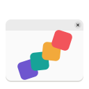
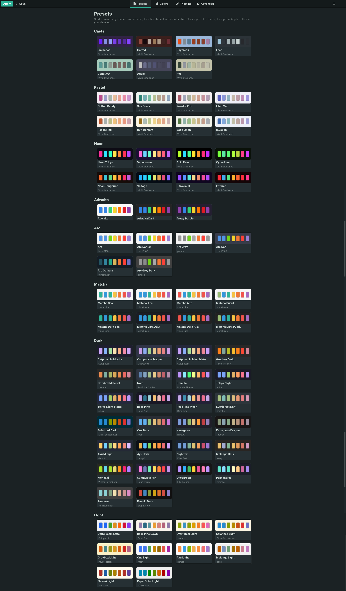
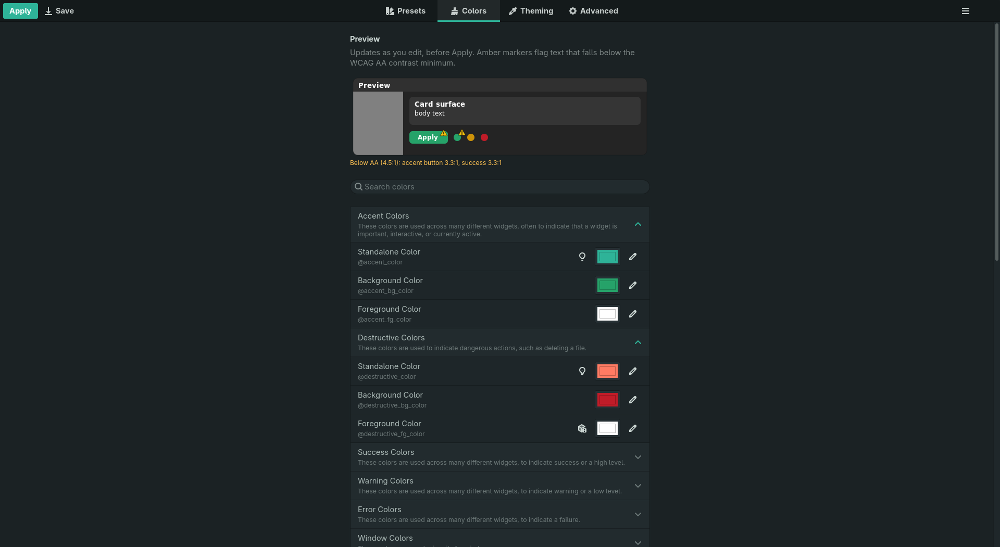
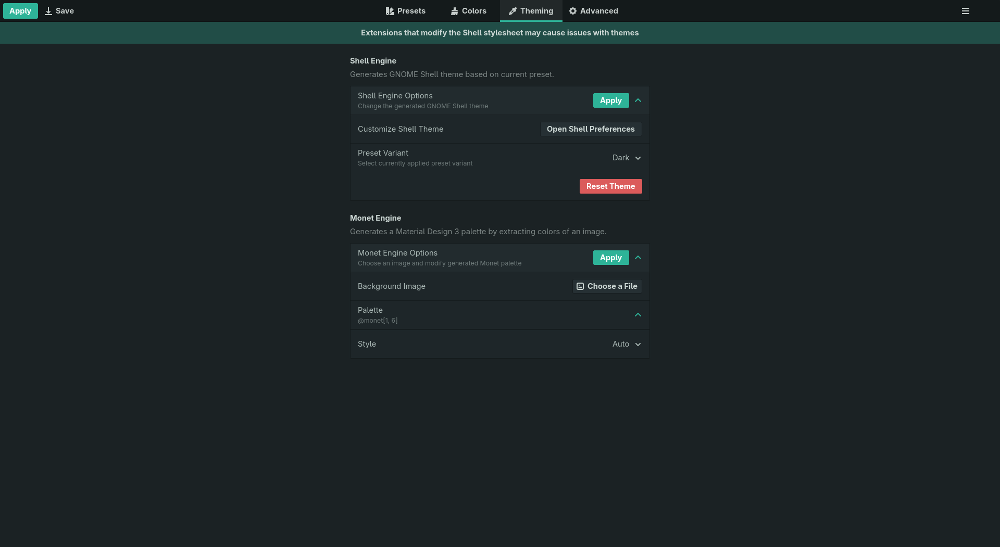
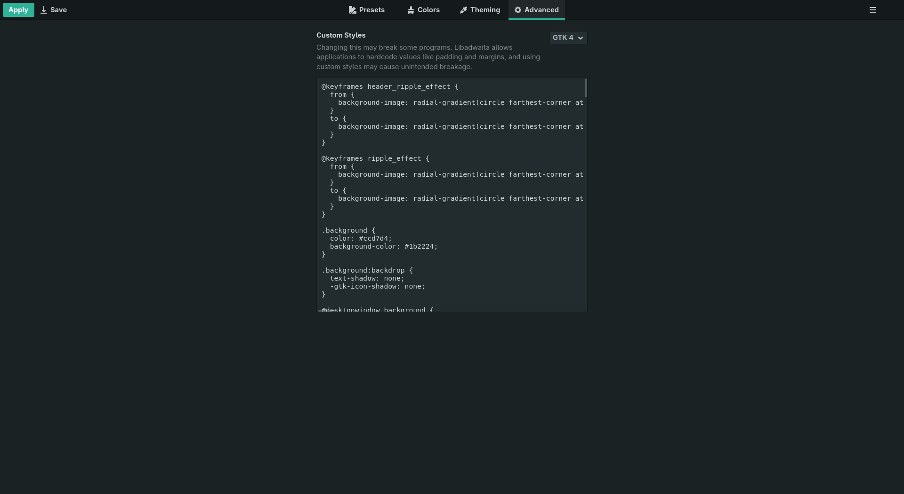
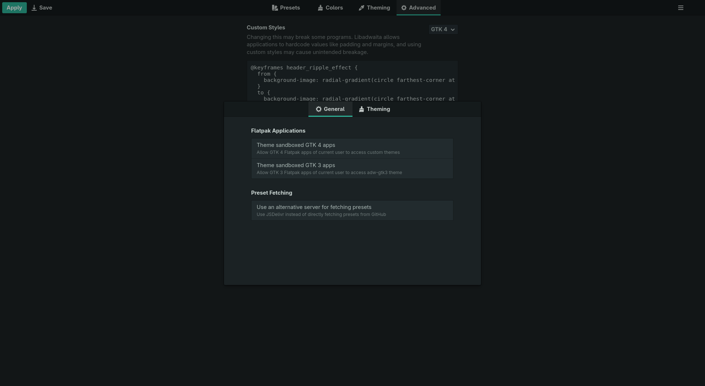

Early, but workingChange the look of Adwaita, with ease.
A maintained fork of Gradience, brought back to the current GNOME runtime. Recolour every part of the Adwaita palette, start from one of 76 ready-made colour schemes, and apply it to Libadwaita, GTK 4 and GTK 3 apps — without hand-editing a single config file.
Signed Flatpak repo — new releases arrive with flatpak update. Prefer a one-off file? Download the .flatpak bundle.

The original was archived in June 2024. This picks it back up.
Builds and runs on GNOME 50, and a weekly job bumps the manifest and build-tests it before the change lands.
Rebuilt on current libadwaita — ToolbarView, adaptive Breakpoint layout, boxed lists, and the newer row widgets.
76 colour schemes built in — Catppuccin, Gruvbox, Nord, Dracula, Rosé Pine, Everforest, Solarized, Tokyo Night and the full Arc and Matcha families, plus three original sets: Pastel, Neon and Casts.
Everything from upstream, plus the parts it never got round to.
Every scheme is a card tinted with its own background colour, showing its character hues. Click one to load it.
All 46 named Adwaita colours, in collapsible categories with a search box — picker or hex, whichever you prefer.
A schematic window at the top of the Colors tab redraws as you edit, before you apply anything — and marks any text that falls below the WCAG AA contrast minimum, so an unreadable pairing is visible immediately.
Every bundled scheme is scored against WCAG AA. All but one clear it — Solarized Light is left as its authors intended, since its low contrast is the scheme rather than a mistake.
The Monet engine turns any image into a full Material You scheme — choose from nine variants (Vibrant, Tonal Spot, Expressive…) and a contrast level.
Generate a matching Shell theme from the current preset — the panel, overview, Super+Tab switcher and quick settings repaint on a running session. No logging out. It recolours the stylesheet your installed Shell already ships, so it follows whatever GNOME you run rather than a list of known versions.
An escape hatch for anything the colour variables can't express, per toolkit.
The window reflows to narrow widths, moving the view switcher to a bottom bar.
Four tabs: pick a scheme, tune it, apply it, then go further.




From the signed Flatpak repo — flatpak update keeps it current.
flatpak install --user https://superuser-miguel.github.io/Vivid_Gradience-repo/VividGradience.flatpakref
flatpak run io.github.superuser_miguel.VividGradiencePrefer a one-off file? A single-file .flatpak bundle is on GitHub Releases too, but it carries no auto-update — a newer release means reinstalling it. Vivid Gradience is not on Flathub and is distributed independently.
Native apps need nothing. Sandboxed ones need one permission.
Grant access to the GTK 4 config: sudo flatpak override --filesystem=xdg-config/gtk-4.0, or the same entry in Flatseal.
Install adw-gtk3, then grant xdg-config/gtk-3.0 the same way. And install the Flatpak theme extension — flatpak install flathub org.gtk.Gtk3theme.adw-gtk3. Without it your host apps get adw-gtk3 and every Flatpak silently falls back to stock Adwaita, because a sandbox cannot see /usr/share/themes. Why.
Install the User Themes extension, then use the Shell engine in the Theming tab. It repaints your running session — no logout.
Nothing here needs you to log out. Named colours are read once when an application starts, so the app you are looking at needs reopening — but the panel, overview, Super+Tab switcher and quick settings all update immediately. The full table is on the findings page.
Honest about what's next. (The preset gallery, the modernised UI, runtime tracking and signed auto-updating installs already shipped.)
.zip — fetch and install themes from inside the app, managing the stylesheet it shares with them rather than overwriting it.